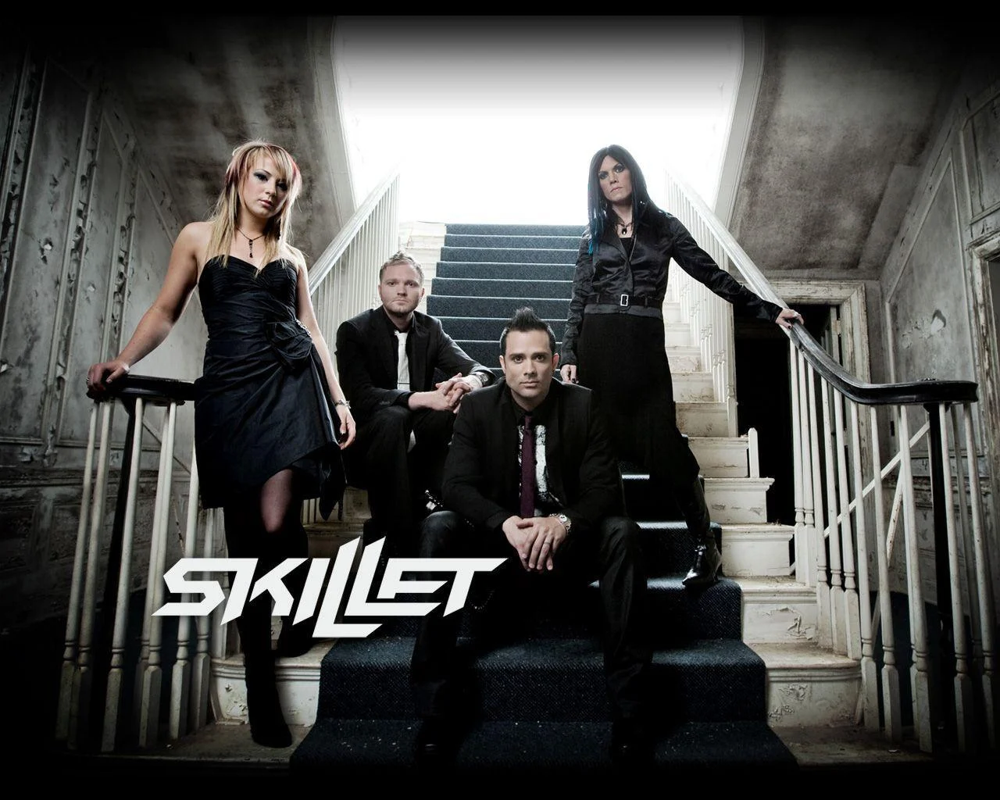
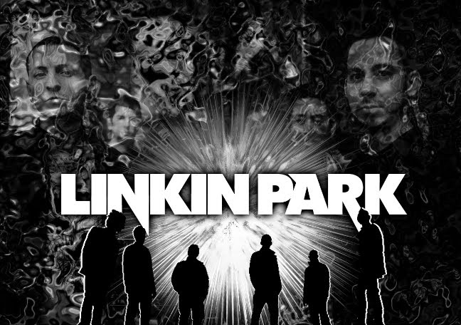

LOGOTIPO
Publicidad
Conjunto de información que se encuentra en una dirección determinada de internet.
Conjunto de información que se encuentra en una dirección determinada de internet.
Feel Invincible
"Es el primer sencillo del álbum de 2016, Unleashed, de la banda estadounidense de rock cristiano Skillet, y es la primera canción del álbum. Fue lanzado el 20 de mayo de 2016. La canción se convirtió en el primer sencillo No. 1 de Hot Christian Songs de Skillet.
Centuries

Es una canción de la banda estadounidense de rock Fall Out Boy , lanzado 8 de septiembre de 2014 como el primer sencillo de su próximo sexto álbum de estudio, American Beauty/American Psycho. Fue coescrito por Fall Out Boy, con dos productores con partituras de la canción Tom's Diner.
Numb
Es un sencillo del álbum de Linkin Park, Meteora, lanzado en septiembre de 2003.La canción está hecha para un adolescente, como el vídeo musical muestra varias escenas centradas en torno a una adolescente y el rechazo que constantemente recibe por parte de los demás.
WEB
Conjunto de información que se encuentra en una dirección determinada de internet.
WEB
Conjunto de información que se encuentra en una dirección determinada de internet.
WEB
Conjunto de información que se encuentra en una dirección determinada de internet.